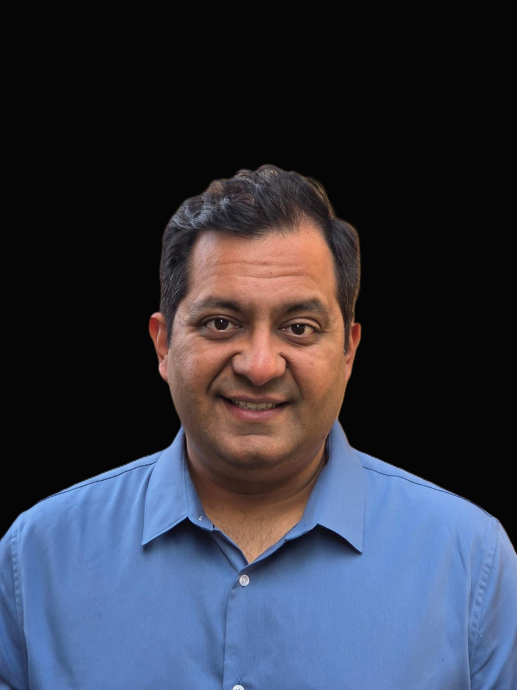
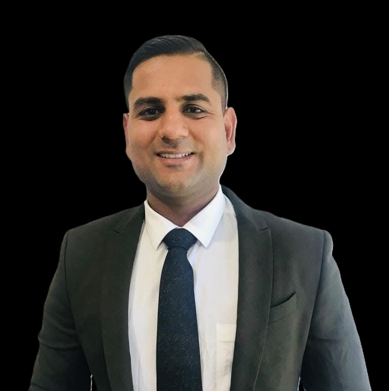

.jpg)
Deepak Vinayak OAM JP
Founder & Chairperson
A visionary leader dedicated to fostering high-level engagement and strengthening people-to-people ties between Australia and India through strategic partnerships and inclusive dialogue.

Prof. Kamala Kanta Dash
Secretary
An accomplished academic and administrator with expertise in governance and organizational leadership, ensuring the foundation operates with transparency and integrity.
.jpg)
Prof. Sucheta Priyabadini
Vice Chairperson
A distinguished scholar and thought leader bringing expertise in strategic collaboration and community engagement to advance the foundation's mission and impact.

Sumit Wadhera
Head of Non-Profit & Community Engagement
A senior leader with over 19 years’ experience across hospitality, aviation, luxury and sales sectors. He also serves as a Lieutenant and Brigade Community Safety Coordinator with the CFA, leading crews and proactive safety initiatives. He is driven by service, discipline and practical leadership.

Ishan Bansal
Treasurer
Ishan brings a strong business and commercial background, with extensive experience across accounting, property development and the building sector. His commercial insight, strategic thinking and practical leadership contribute an outcomes-focused perspective that supports the organisation's broader non-profit objectives.
Neha Gupta
Head of Youth Engagement
People-centric HR professional with 6+ years across startups and high-growth teams (Google, GSK, PhonePe), driving engagement, retention, and inclusive culture. MBA in Human Resources focused on leadership development and sustainable people practices; also an Art of Living meditation coach integrating inner calm with outer dynamism.

.jpg)


.jpg)